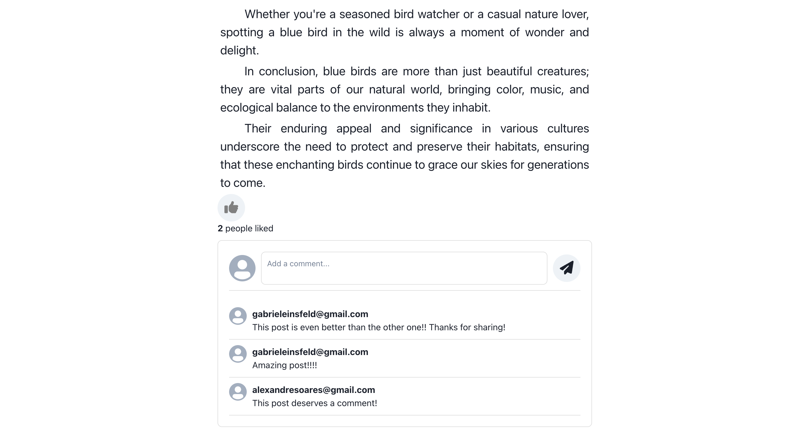

My Work


I am Gabriel Soares, a Master's student in Computer Science at the University of Birmingham, with a focus on Python and software development. I have developed several projects that emphasize efficient coding, system design, and practical problem-solving. These projects demonstrate my ability to create effective software solutions. I aim to continue building my technical expertise and contribute to high-quality software development that addresses real-world challenges.